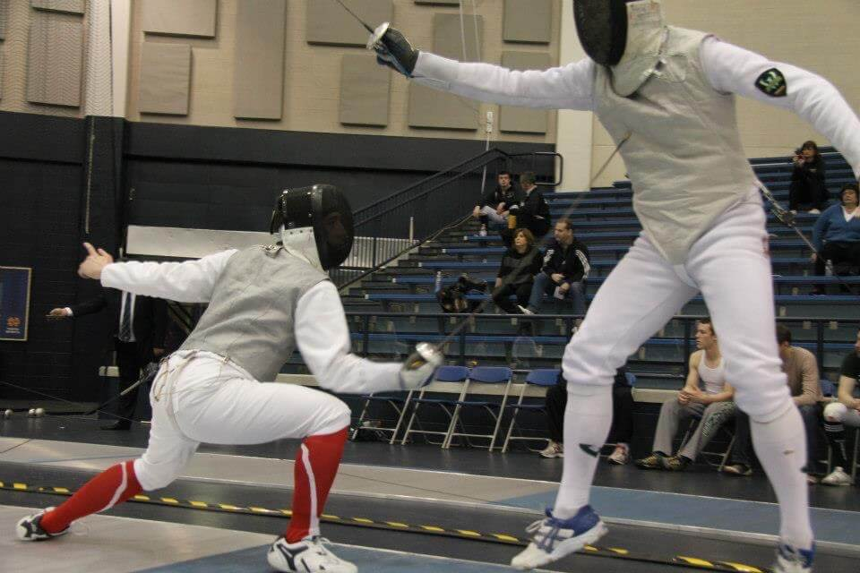

About Me
I am a graduate student at Indiana University and a leader in the Star Formation Across Cosmic Time (SFACT) survey. Together with my advisor, John Salzer, and fellow graduate student, Jennifer Sieben, we discover and study emission line galaxies at different points in our universe's history. Because it takes light time to travel across the vastness of space, when we look out into our universe we are also looking back in time. Each galaxy we discover at larger distances away from us is like looking farther back into the history of our universe. Therefore, the SFACT survey is collecting a sample of emission line galaxies at different distances, allowing us to explore how these objects change over time as our universe evolves.
In addition to the SFACT survey, I am also interested in learning and applying data mining and machine learning techniques to research problems in astronomy. I have taken graduate level data mining and machine learning courses at IU and received my minor in Scientific Computing in 2016.
I received my bachelor's degree in Astronomy and Physics, with a minor in Mathematics, from the University of Wisconsin-Madison. While at UW I constructed radiative transfer models of edge-on spiral galaxies, worked to determine the Milky Way's rotation curve, and converted old astronomy code from IDL to Python.
In my free time, you'll find me fencing and teaching foil through the Fencing Club at Indiana University, listening to audiobooks, and tutoring undergraduates in math and physics.